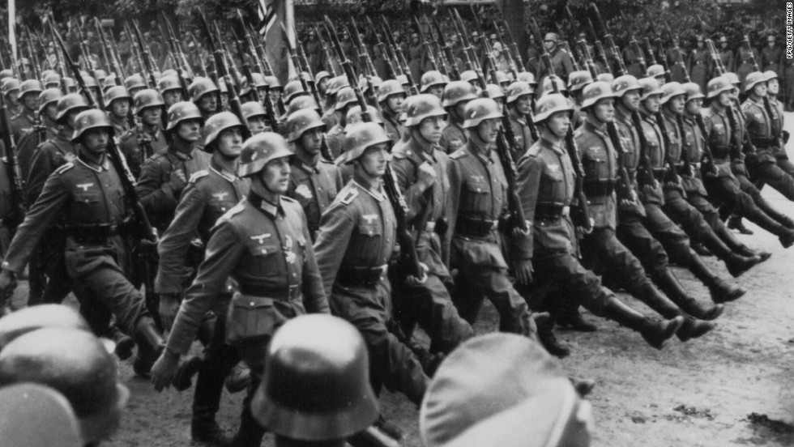

Overview

World War II was a global war that lasted from 1939 to 1945. It involved the vast majority of the world's countries and every inhabited continent.
In this wiki, we explore the depths of the conflict, from the reasons it began to the forgotten stories of soldiers on the front lines.